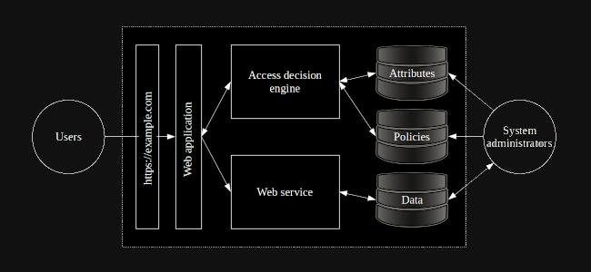

Application overview
Create an application overview. This step supports understanding the main functionalities and subjects of the application to be developed/under development. To understand the application more fully, describe the main components, usage scenarios, the roles of subjects and their interactions. For example:

A user logs in
A user logs in through the web application with a username and password
The web application creates a web request and sends it to Access Decision Engine
The Access Decision Engine retrieves relevant policies
The Access Decision Engine makes an access decision based on the access control model, and sends a response to the web application
…
Users create new content
Users read content
Users delete content
A new user registers
Management generates access policies for the content
System administrators delete data after a predefined time
System administrators create, read, and modify roles and access policies for the created content
System administrators delete a user